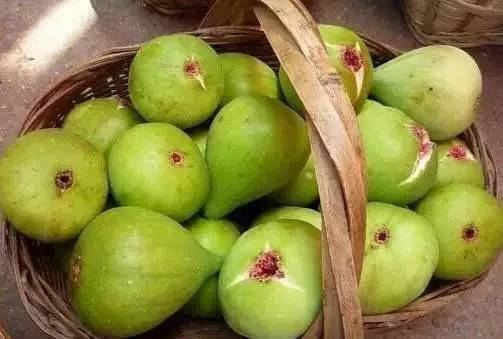
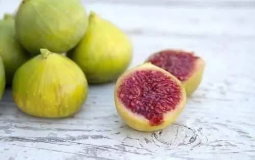
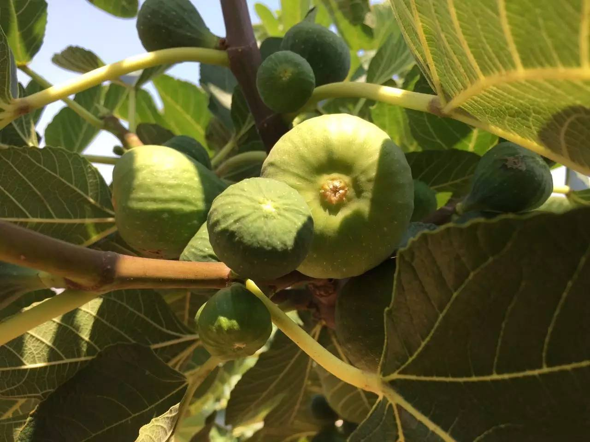
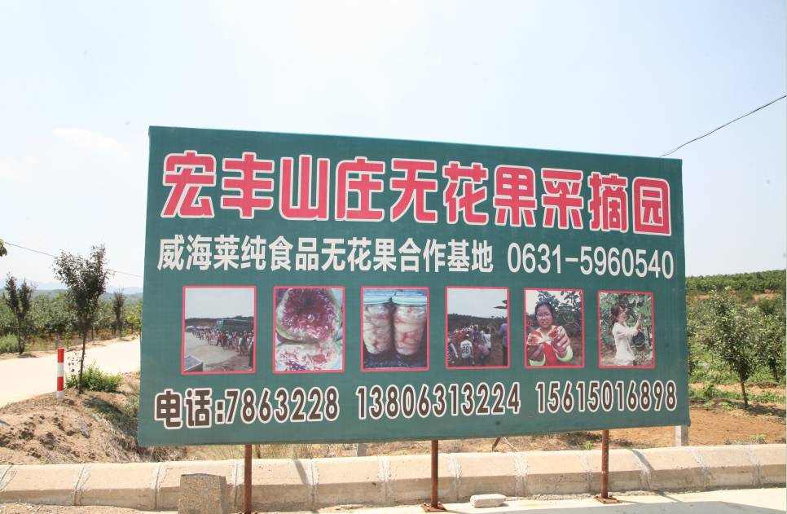

聚焦 | 一枚无花果的自述
掌上荣成
2017-07-12 17:34
大家好，我叫无花果，籍贯是荣成市。我的来历颇深，早在《本草纲目》就有记载。

别看我们只是小果子，没法与苹果、梨等水果相比，但是，荣成的无花果产业可不小，在港西、埠柳等镇，出现了不少无花果种植大户。这个产业能够发展壮大，一方面得益于荣成独特的栽培优势，另一方面得益于当地政府的扶持。网络时代也为无花果销售带来了方便。我们的很多伙伴就是被顺风速递运到了京津冀、江浙沪等地区。此外，人们还对无花果进行深加工，延长产业链条。
现在春果正在上市，借此机会我向大家介绍下自己。

我穿着一件绿色外衣，大家可以叫我“绿宝宝”。我的叶子和梧桐树一样，是手掌形的。我的花也很奇特，在肉质花托的内壁上，生长着许多绒毛状的小花，上半部是雄花，下半部是雌花。我们的果子是圆形的，跟刚长出来的叶子正好相反。我存活率可是很高的，但是我们也需要喝水。为了节约用水，果农们采用微灌或滴灌的方法浇灌我。

得到水的滋润后，我就会生长。开始果子是绿色的，经过三四个星期，果实就会成熟，变成紫红色。我比较娇气，熟了就得摘下来，不然会坏在树上。

聪明的果主人在自家果园里开展采摘游，让游客们自主采摘，并且在果园的对面开了渔家乐，为游客们提供休息、吃饭的地方。我还被运往全国各地，走向更大的市场。但在这之前，果农们要每天早早起床，拿着竹筐，摸黑找我已经成熟的伙伴们。
因为天没亮就得干活，果农们时常会被树枝刮伤。一大早，全国各地的收购商就汇聚在港西镇进行收购。为了让我保持美丽的形象，果农们还细心为我套上了一层白色外套。我们的味道鲜美，酷似香蕉，营养丰富。鲜果中果糖和葡萄糖的含量高达15%至28%，由我们制成的果干入药，能开胃止泻，治疗咽喉痛，是治疗哮喘、吐血和痔疮的良药。
现在知道为什么大家这么喜欢我们了，我们可是甜蜜之果、健康之果啊！最后，我还想告诉你个秘密：人们叫我们是“无花果”，但我们也是开花的。在植物世界里，只有无果的花，而没有无花的果。我们的花，是在果子里面。你掰开一个果子，看到里面发红的部分，那就是我们的花。怎么样？你在吃无花果时，是不是感受到一股特别的芳香啊？